Is there a simple way to include them?
2026-10-27
The contact interaction is regulated by a hard cutoff \Lambda,
\langle \vec p\,' | \hat V_\delta | \vec p \rangle = \frac{4\pi a(\Lambda)}{m}\,\theta(\Lambda - p')\,\theta(\Lambda - p) \, ,
where a(\Lambda) is tuned to reproduce the T-matrix at threshold,
a(\Lambda) = \frac{a_0}{1 - \tfrac{2}{\pi} a_0 \Lambda} \, ,
and a_0 is the physical s-wave scattering length.
Because this interaction is separable, the bubble sum can be summed geometrically to give
\begin{aligned} T(\vec p, -\vec p; E) &= \frac{4\pi a(\Lambda)/m}{1 - \tfrac{4\pi a(\Lambda)}{m}\int\! \tfrac{d^3 q}{(2\pi)^3}\, \tfrac{1}{E - q^2/m + i\varepsilon}} \\[4pt] &= \frac{4\pi a(\Lambda)/m}{1 - \tfrac{2 a(\Lambda)}{\pi}\int\! dq\, \tfrac{q^2}{mE - q^2 + i\varepsilon}} \\[4pt] &= \frac{4\pi/m}{\tfrac{1}{a(\Lambda)} - \tfrac{2}{\pi}\int_0^\Lambda\! dq \left(\mathcal{P}\tfrac{q^2}{mE - q^2} - i\pi q^2 \delta(mE - q^2)\right)} \end{aligned}
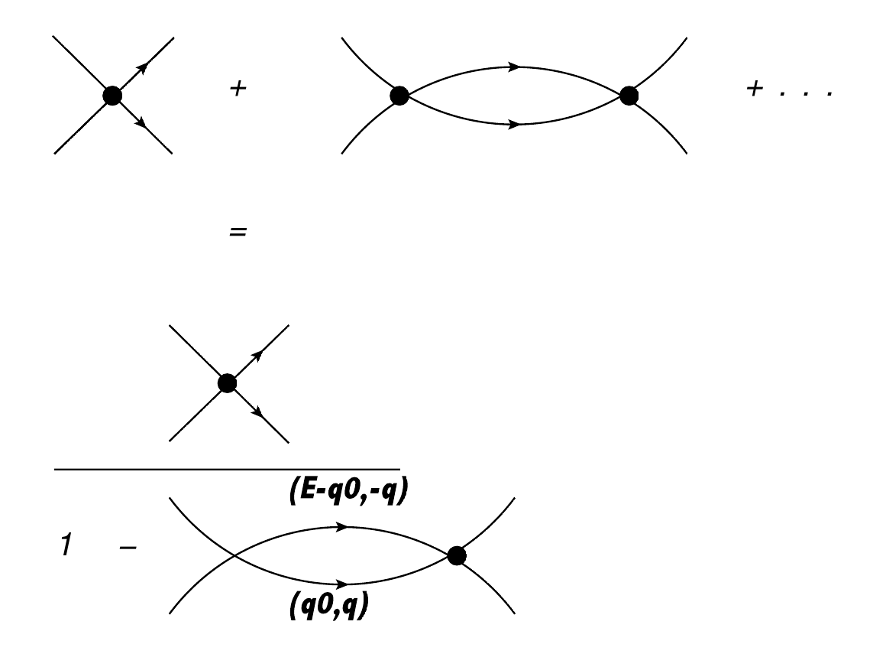
The bubble sum using the contact interaction.
\begin{aligned} \frac{1}{a(\Lambda)} &- \frac{2}{\pi}\int_0^\Lambda\! dq \left(\mathcal{P}\tfrac{q^2}{mE - q^2} - i\pi q^2 \delta(mE - q^2)\right) \\[4pt] &= \frac{1}{a(\Lambda)} + \frac{2}{\pi}\left(\Lambda - \tfrac{\sqrt{mE}}{2}\log\Big(\tfrac{\Lambda + \sqrt{mE}}{\Lambda - \sqrt{mE}}\Big) + i\tfrac{\pi}{2}\sqrt{mE}\right) \\[4pt] &= \frac{1}{a_0} - \frac{\sqrt{mE}}{\pi}\log\Big(\tfrac{\Lambda + \sqrt{mE}}{\Lambda - \sqrt{mE}}\Big) + i\sqrt{mE} \, . \end{aligned}
Plugging this back in gives
\begin{aligned} T(\vec p, -\vec p; E) &= \frac{4\pi/m}{\tfrac{1}{a_0} - \tfrac{\sqrt{mE}}{\pi}\log\Big(\tfrac{\Lambda + \sqrt{mE}}{\Lambda - \sqrt{mE}}\Big) + i\sqrt{mE}} \\[4pt] &\approx \frac{4\pi/m}{\tfrac{1}{a_0} + i\sqrt{mE} - \tfrac{2mE}{\pi}\tfrac{1}{\Lambda} + O(\Lambda^{-2})} \, . \end{aligned}
At threshold one recovers the correct normalization, T(\vec 0, \vec 0; E=0) = 4\pi a_0/m.
Assuming the existence of a bound state E=-B, one gets the familiar result from the pole of the amplitude: B=\frac{1}{ma_0^2}.
Within a finite cubic volume of size L^3, the analog of the denominator evaluated above is
\begin{aligned} \frac{1}{a(\Lambda)} - \frac{4\pi}{m}\frac{1}{L^3}\sum_{\vec n}^{2\pi n < \Lambda L}\frac{1}{E - \tfrac{4\pi^2 n^2}{m L^2}} &= \frac{1}{a(\Lambda)} - \frac{1}{\pi}\frac{1}{L}\sum_{\vec n}^{2\pi n < \Lambda L}\frac{1}{\epsilon - n^2} \\[4pt] &= \frac{1}{a_0} - \frac{2}{\pi}\Lambda - \frac{1}{\pi}\frac{1}{L}\sum_{\vec n}^{2\pi n < \Lambda L}\frac{1}{\epsilon - n^2} \, , \end{aligned}
where I define \epsilon = \dfrac{E m L^2}{4\pi^2}.
\Lambda above has dimension of inverse length. Moving to a dimensionless definition of \Lambda,
\Lambda \to \frac{2\pi}{L} \Lambda\, ,
we now have1
\frac{1}{a_0} - 4\frac{\Lambda}{L} - \frac{1}{\pi}\frac{1}{L}\sum_{\vec n}^{n < \Lambda}\frac{1}{\epsilon - n^2} = \frac{1}{a_0} - \frac{1}{\pi L}\left(\sum_{\vec n}^{n < \Lambda}\frac{1}{\epsilon - n^2} + 4\pi\Lambda\right) \, ,
which we can rewrite as
-\frac{1}{a_0}=\frac{1}{\pi L}\lim_{\Lambda \to \infty}\left(\sum_{\vec n}^{n < \Lambda}\frac{1}{n^2-\epsilon} - 4\pi\Lambda\right)\equiv \frac{1}{\pi L}S_0\left(\epsilon\right) \tag{1}
and the RHS is now Lüscher’s formula. In particular, values of \epsilon that satisfy this equality correspond to the eigen-energies of the two-particle interacting system.
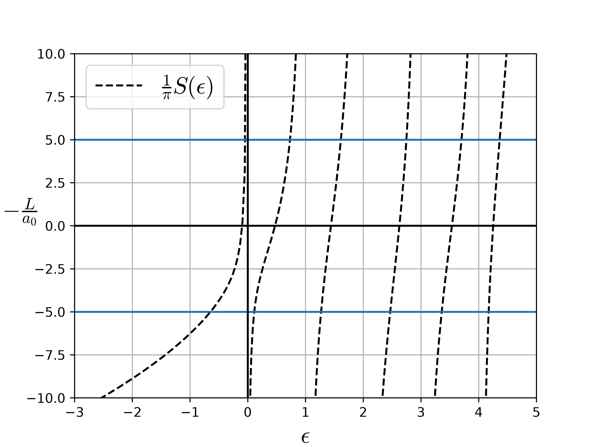
To obtain the full model-independent Lüscher formula, the idea is to generalize the potential
\langle \vec p\,' | \hat V | \vec p \rangle = \theta(\Lambda - p')\left(C_0(\Lambda)+C_2(\Lambda)\frac{p'^2+p^2}{2}+\ldots\right)\theta(\Lambda - p) \, ,
where the coefficients C_i(\Lambda) are tuned such that the scattering amplitude gives the correct physical phase shift \delta,
T(\vec p,-\vec p;E) = -\frac{4\pi}{m}\frac{1}{p\cot\delta - ip} \tag{2}
When we repeat the calculation in a finite volume with this potential, it leads to the full Lüscher formula
p\cot\delta = \frac{1}{\pi L}S_0(\epsilon)\ . where \epsilon is defined as before.
Note
For detailed derivations see
and of course the original sources by Lüscher (Warning!! Hard to understand!!)
I assume a Hamiltonian with potential of the form
\langle \vec p' | \hat V | \vec p \rangle = V(p',p) = \frac{2\pi C_0}{\mu} f(p') f(p) f(p) = \exp\left(-\frac{\pi (p r)^2}{32}\right) C_0^{-1} = \frac{1}{a_0} - \frac{4}{\pi r} \, ,
This is a separable potential with parameters chosen such that
p \cot\delta(p) = \frac{1}{f(p)^2}\left(-\frac{1}{a_0} + \frac{2p}{\sqrt\pi} F\!\left(\tfrac{1}{4} p \sqrt\pi r\right)\right) \approx -\frac{1}{a_0} + \frac{r}{2} p^2 - \frac{r^3}{48} p^4 + \mathcal{O}(p^6)
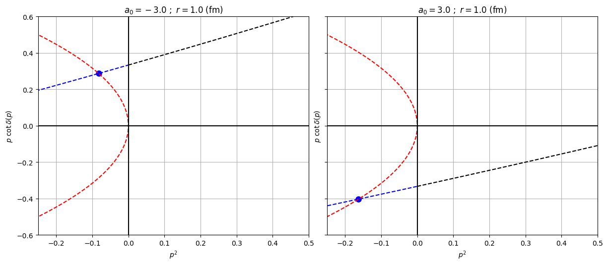
In a box of side length L, the eigenenergies E can be obtained by solving the following transcendental equation
-\frac{L}{a_0} + \frac{4L}{\pi r} = \frac{1}{\pi} \sum_{\vec n \in \text{B.Z.}} \frac{f(\vec n)^2}{\vec n^2 - \epsilon} \, ,
with \epsilon = \dfrac{E mL^2}{4\pi^2} and f(\vec n) = \exp\left(-\dfrac{\pi^3 r^2}{8 L^2} \vec n^2\right). I assume the two particles have equal mass m.
Given \epsilon, I insert this into Lüscher’s formula to get the phase shift
p\cot\delta(p) = \frac{1}{\pi L} S_0(\epsilon)
where
S_0(\epsilon) = \lim_{\Lambda \to \infty} \left[ \sum_{\vec n}^{n < \Lambda} \frac{1}{n^2 - \epsilon} - 4\pi\Lambda \right]
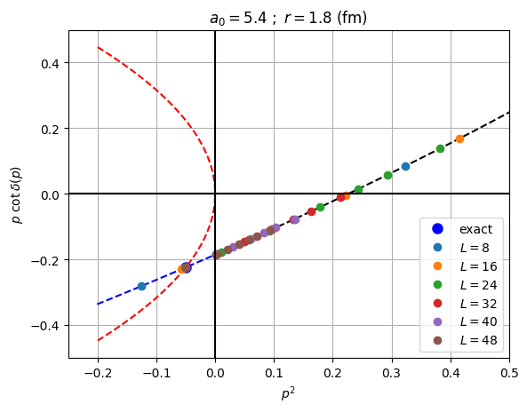
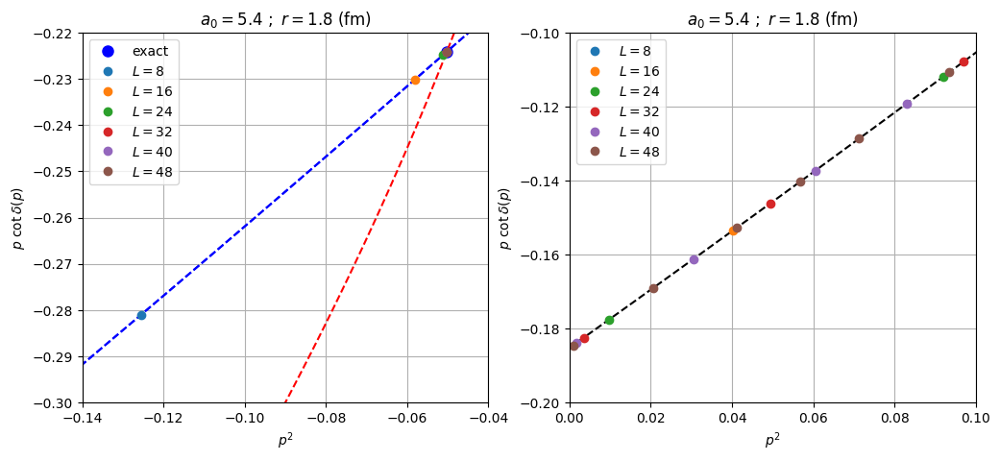
Can be shown that the location of the bound state depends exponentially on L
E_{-1}(L) = -\frac{\gamma^2}{m}\left(1 + \tfrac{12}{\gamma L}\, \tfrac{e^{-\gamma L}}{1 - 2\gamma(p\cot\delta)'} + \dots \right) \approx -\frac{\gamma^2}{m}\left(1 + \tfrac{12}{\gamma L}\, \tfrac{e^{-\gamma L}}{1 - \gamma r} \right)
Here I define p = i\gamma
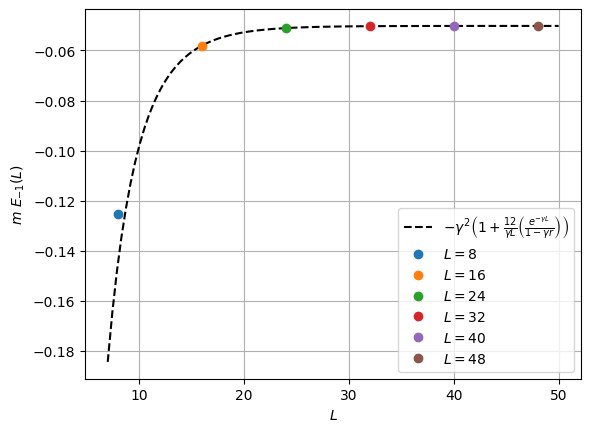
Note
Lowest scattering state has polynomial dependence on L:
\scriptsize \begin{aligned} E_0(L) = \frac{4\pi a_0}{m L^3}\Big(&1 + 2.8372974794806\,\tfrac{a_0}{L}\\ &+ 6.375183165675\left(\tfrac{a_0}{L}\right)^2 \\ &+ 8.311950724058\left(\tfrac{a_0}{L}\right)^3 + 2\pi\,\tfrac{a_0^2 r}{L^3} + \dots\Big) \end{aligned}
Note: m E_0 = p^2
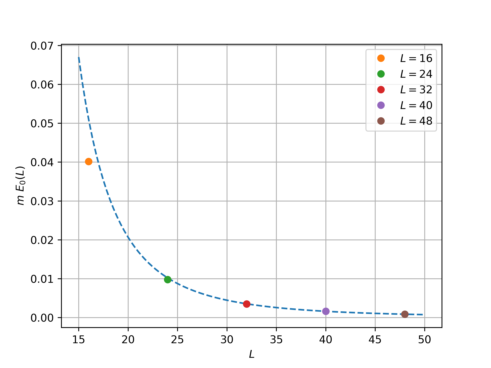
Note
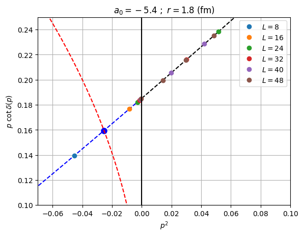
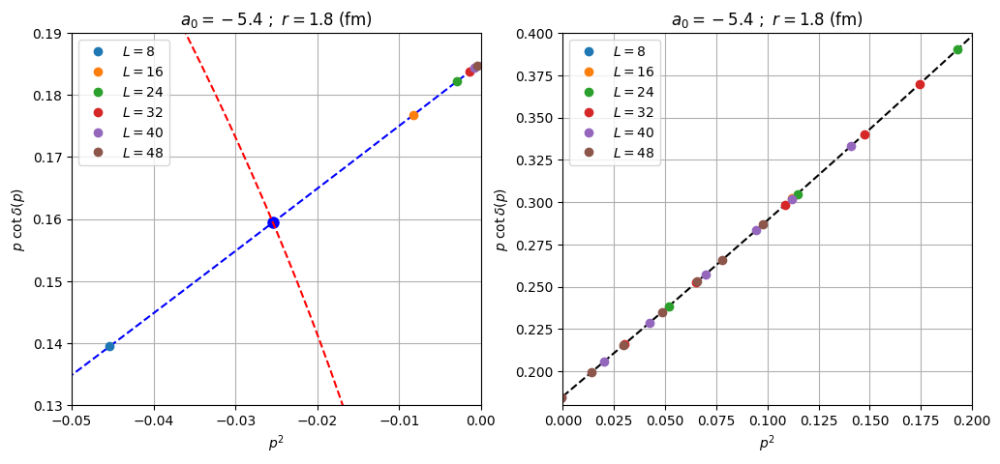
Virtual state has polynomial dependence on L just like a regular scattering state:
\scriptsize \begin{aligned} E_0(L) = \frac{4\pi a_0}{m L^3}\Big(&1 + 2.8372974794806\,\tfrac{a_0}{L} \\ &+ 6.375183165675\left(\tfrac{a_0}{L}\right)^2 \\ &+ 8.311950724058\left(\tfrac{a_0}{L}\right)^3 + 2\pi\,\tfrac{a_0^2 r}{L^3} + \dots\Big) \end{aligned}
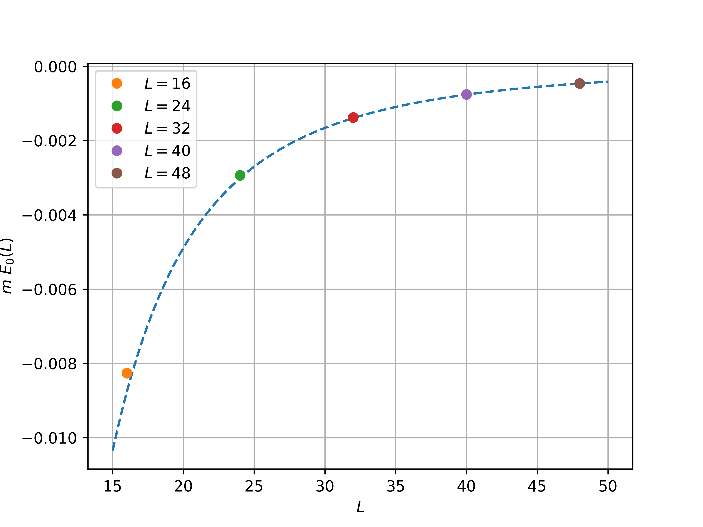
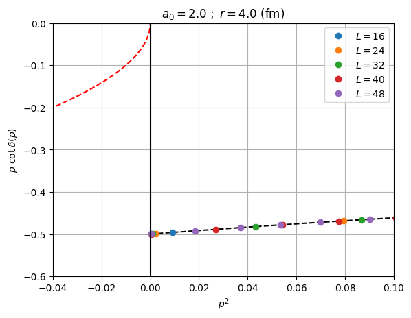
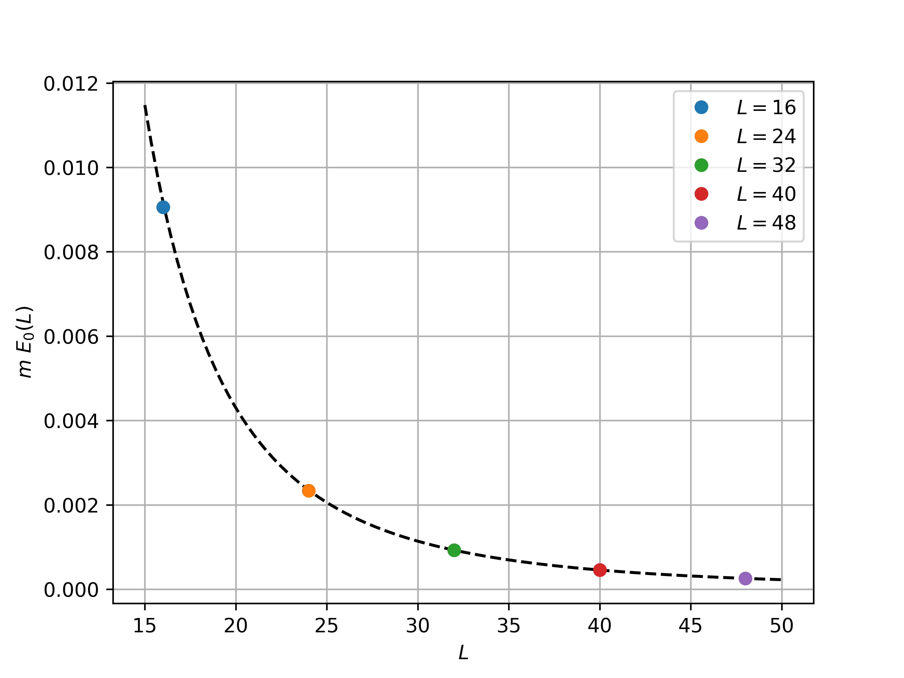
Finite-volume dependence of lowest scattering state
I will only consider s-wave scattering to keep life as simple as possible.
The “long-range” part is modeled by one-pion exchange (OPE)1
V^{l=0}_{\pi}(p',p) = -\frac{g^2}{4p'p}\log\left(\frac{(p+p')^2+\mu^2}{(p-p')^2+\mu^2}\right)
p^2 < -\mu^2/4
V^{l=0}_{\pi}(p',p) = \sum_{i,j}^{\infty} g_i(p') \lambda_{ij} g_j(p)\approx \sum_{i,j}^{N} g_i(p') \lambda_{ij} g_j(p)
The question is then: what is a good choice of basis functions g_i(p) (or form factors) that can reproduce the branch cut?
V_{\rm cut}(p',p)\equiv-\frac{g^2}{2\mu^2}\left[h(p')+h(p)\right] where h(p) = \frac{\mu^2}{4p^2} \log\left(\frac{4 p^2+\mu^2}{\mu^2}\right)
Properties of V_{\rm cut}(p',p)
Warning
V^{l=0}_{\pi}(p',p) = V_{\rm cut}(p',p) + \underbrace{V^{l=0}_{\pi}(p',p)-V_{\rm cut}(p',p)}_{\approx\sum_{i,j=2}^{N} g_i(p') \lambda_{ij} g_j(p)}
\begin{align} \hat V &= \hat V^{l=0}_\pi + \hat V_\delta \nonumber\\ &= \hat V_{\rm cut} + ( \hat V^{l=0}_\pi - \hat V_{\rm cut} ) + \hat V_\delta \nonumber\\ &= -\frac{g^2}{2\mu^2}\left[\hat h \hat\delta_\Lambda+ \hat\delta_\Lambda\hat h\right] + \sum_{i,j=2}^{N} \hat g_i \hat\delta_\Lambda \lambda_{ij}\hat g_j + \frac{4\pi a(\Lambda)}{m} \hat\delta_\Lambda\nonumber \end{align}
where \hat\delta_\Lambda is the regulated delta function defined as \langle p'| \hat\delta_\Lambda|p\rangle=\theta(\Lambda - p')\,\theta(\Lambda - p), and \hat h and \hat g_i are operators defined such that \hat h|p\rangle = h(p)|p\rangle and \hat g_i|p\rangle = g_i(p)|p\rangle.
I can rexpress this potential in rank-(N+1) form. I first define the vector of form factors \hat{\bf f} = (1,\hat h,\hat g_2,\ldots,\hat g_N). The potential is then \hat V = \hat{\bf f}^T {\hat\lambda} \hat{\bf f}, where \lambda is
{\hat \lambda} = \begin{pmatrix} \frac{4\pi a(\Lambda)}{m} & -\frac{g^2}{2\mu^2} & 0 & \cdots & 0 \\ -\frac{g^2}{2\mu^2} & 0 & 0 & \cdots & 0 \\ 0 & 0 & \lambda_{22} & \cdots & \lambda_{2N} \\ \vdots & \vdots & \vdots & \ddots & \vdots \\ 0 & 0 & \lambda_{N2} & \cdots & \lambda_{NN} \end{pmatrix}\ \hat\delta_\Lambda \, .
\hat T(E)=\hat V + \hat V \hat G_0(E) \hat T(E)
Assume
\hat T(E) = \hat{\bf f}^T \tau(E) \hat{\bf f}
and the beauty of separability comes into play:
\tau^{-1}(E) = \begin{cases} \lambda^{-1} - \frac{1}{(2\pi)^3}\int^\Lambda d^3pf(p) G_0 (p;E) f^T(p) & {\rm \infty\ volume}\\ \lambda^{-1} - \frac{1}{L^3}\sum_n^\Lambda f(p_n) G_0 (p_n;E) f^T(p_n) & {\rm finite\ volume} \end{cases}
This is equivalent to setting g_i(p)=0\ \forall\ i \implies f(p) = (1,h(p)). We thus have
\lambda = \begin{pmatrix} \frac{4\pi a(\Lambda)}{m} & -\frac{g^2}{2\mu^2} \\ -\frac{g^2}{2\mu^2} & 0 \end{pmatrix} \implies \lambda^{-1} = \begin{pmatrix} 0 & -\frac{2\mu^2}{g^2} \\ -\frac{2\mu^2}{g^2} & -\frac{4\mu^4}{g^4}\frac{4\pi a(\Lambda)}{m} \end{pmatrix}
We have to retune a(\Lambda) to give the correct scattering amplitude at threshold in the continuum. Note that V_{\rm cut} is also linearly divergent. This complicates things, as we will see.
So the condition I want to match is
T(p'=p=0;E=0)=\frac{4\pi a_0}{m}={\bf f}^T(0)\tau(0){\bf f}(0)=\tau_{11}(0)+\tau_{12}(0)+\tau_{21}(0)+\tau_{22}(0)
We have then that
\begin{align} \tau^{-1}(0)&= \underbrace{ \begin{pmatrix} 0 & -\frac{2\mu^2}{g^2} \\ -\frac{2\mu^2}{g^2} & -\frac{4\mu^4}{g^4}\frac{4\pi a(\Lambda)}{m} \end{pmatrix}}_{\lambda^{-1}} - \underbrace{ \int^\Lambda \frac{d^3p}{(2\pi)^3} \begin{pmatrix} \frac{-1}{p^2/m} & -\left(\frac{\mu}{2p}\right)^2\frac{\log\left(1+\frac{4p^2}{\mu^2}\right)}{p^2/m}\\ -\left(\frac{\mu}{2p}\right)^2\frac{\log\left(1+\frac{4p^2}{\mu^2}\right)}{p^2/m} & -\left(\frac{\mu}{2p}\right)^4\frac{\log^2\left(1+\frac{4p^2}{\mu^2}\right)}{p^2/m} \end{pmatrix}}_{\frac{1}{(2\pi)^3}\int^\Lambda d^3pf(p) G_0 (p;E=0) f^T(p)}\nonumber\\ &= \begin{pmatrix} 0 & -\frac{2\mu^2}{g^2} \\ -\frac{2\mu^2}{g^2} & -\frac{4\mu^4}{g^4}\frac{4\pi a(\Lambda)}{m} \end{pmatrix}+ \frac{m}{2\pi^2}\int^\Lambda dp \begin{pmatrix} 1 & \left(\frac{\mu}{2}\right)^2\frac{\log\left(1+\frac{4p^2}{\mu^2}\right)}{p^2}\\ \left(\frac{\mu}{2}\right)^2\frac{\log\left(1+\frac{4p^2}{\mu^2}\right)}{p^2} & \left(\frac{\mu}{2}\right)^4\frac{\log^2\left(1+\frac{4p^2}{\mu^2}\right)}{p^4} \end{pmatrix}\nonumber\\ &= \begin{pmatrix} 0 & -\frac{2\mu^2}{g^2} \\ -\frac{2\mu^2}{g^2} & -\frac{4\mu^4}{g^4}\frac{4\pi a(\Lambda)}{m} \end{pmatrix}+ \frac{m}{2\pi^2} \begin{pmatrix} \Lambda & \frac{\pi \mu }{2}-\Delta_1(\Lambda)\\ \frac{\pi \mu }{2}-\Delta_1(\Lambda)& \frac{2 \pi \mu }{3}(1-\log (2))-\Delta_2(\Lambda) \end{pmatrix}\nonumber \end{align}
where
\begin{align} \Delta_1(\Lambda)&=\frac{\mu ^2 \log \left(\frac{4 \Lambda ^2}{\mu ^2}+1\right)}{4 \Lambda }+\mu \cot ^{-1}\left(\frac{2 \Lambda }{\mu }\right)\sim\mathcal{O}\left(\frac{\log(\Lambda)}{\Lambda}\right)\nonumber\\ \Delta_2(\Lambda)&=\frac{1}{144} \mu \left[96 \left(\log \left(\frac{4 \Lambda ^2}{\mu ^2}+1\right)+2 \log \left(\frac{2 \mu }{\mu +2 i \Lambda }\right)-2\right) \tan ^{-1}\left(\frac{2 \Lambda }{\mu }\right)+\frac{3 \mu \log \left(\frac{4 \Lambda ^2}{\mu ^2}+1\right) \left(\mu ^2 \log \left(\frac{4 \Lambda ^2}{\mu ^2}+1\right)+16 \Lambda ^2\right)}{\Lambda ^3}\right.\nonumber\\ &\left.\qquad\qquad\qquad\qquad+96 i \tan ^{-1}\left(\frac{2 \Lambda }{\mu }\right)^2+96 i \text{Li}_2\left(\frac{4 i \Lambda }{2 i \Lambda +\mu }-1\right)+8 \pi (12+i \pi -6 \log (4))\right]\sim\mathcal{O}\left(\frac{\log^2(\Lambda)}{\Lambda^3}\right)\nonumber \end{align}
I can solve for a(\Lambda)1
\begin{align} \left(1-\frac{2}{\pi}a_0\Lambda\right)a(\Lambda)&=a_0 +g^2 m \left(\frac{a_0 \log \left(\frac{4 \Lambda ^2}{\mu ^2}+1\right)}{8 \pi ^2 \Lambda }-\frac{a_0 \tan ^{-1}\left(\frac{2 \Lambda }{\mu }\right)}{2 \pi ^2 \mu }+\frac{1}{4 \pi \mu ^2}\right)\nonumber\\ & + g^4 m^2 \left[\frac{a_0 \log ^2\left(\frac{4 \Lambda ^2}{\mu ^2}+1\right)}{192 \pi ^4 \Lambda ^2}+\frac{a_0 \log \left(\frac{4 \Lambda ^2}{\mu ^2}+1\right)}{48 \pi ^4 \mu ^2}+\frac{\frac{\log \left(\frac{4 \Lambda ^2}{\mu ^2}+1\right)}{192 \pi ^3 \mu ^2}-\frac{a_0 \log \left(\frac{4 \Lambda ^2}{\mu ^2}+1\right) \tan ^{-1}\left(\frac{2 \Lambda }{\mu }\right)}{32 \pi ^4 \mu }}{\Lambda }+\frac{a_0 \tan ^{-1}\left(\frac{2 \Lambda }{\mu }\right)^2}{16 \pi ^4 \mu ^2}+\Lambda \left(\frac{1}{32 \pi ^3 \mu ^4}-\frac{a_0 \tan ^{-1}\left(\frac{2 \Lambda }{\mu }\right)}{12 \pi ^4 \mu ^3}\right)+\right.\nonumber\\ &\qquad\left.(\pi -2 a_0 \Lambda ) \left(\left(-\frac{\log \left(\frac{4 \Lambda ^2}{\mu ^2}+1\right)}{48 \pi ^4 \mu ^3}-\frac{\log \left(\frac{2 \mu }{\mu +2 i \Lambda }\right)}{24 \pi ^4 \mu ^3}\right) \tan ^{-1}\left(\frac{2 \Lambda }{\mu }\right)-\frac{i \tan ^{-1}\left(\frac{2 \Lambda }{\mu }\right)^2}{48 \pi ^4 \mu ^3}+\frac{-8 i \pi ^2 \mu -96 i \mu \text{Li}_2\left(\frac{4 i \Lambda }{2 i \Lambda +\mu }-1\right)}{4608 \pi ^4 \mu ^4}\right)-\frac{\log ^2\left(\frac{4 \Lambda ^2}{\mu ^2}+1\right)}{1536 \pi ^3 \Lambda ^3}-\frac{\tan ^{-1}\left(\frac{2 \Lambda }{\mu }\right)}{48 \pi ^3 \mu ^3}\right]\nonumber \end{align}
In the limit that g\to0 I find
\frac{a_0}{1-\frac{2}{\pi}a_0\Lambda}+\frac{g^2 m \left(a_0 \mu ^2 \log \left(\frac{4 \Lambda ^2}{\mu ^2}+1\right)-4 a_0 \Lambda \mu \tan ^{-1}\left(\frac{2 \Lambda }{\mu }\right)+2 \pi \Lambda \right)}{(1-\frac{2}{\pi}a_0\Lambda)8 \pi ^2 \Lambda \mu ^2}+\mathcal{O}\left(g^3\right)
which shows that one recovers the \delta-function result at g=0.
However, in the limit \Lambda\to\infty I get instead the following result:
\begin{align} \frac{1}{1-\frac{2}{\pi}a_0\Lambda}&\left[a_0 +\frac{g^2 m \left(3 a_0 g^2 \mu m-48 \pi a_0 \mu ^2-2 g^2 m \log \left(\frac{4 \Lambda ^2}{\mu ^2}\right) +4 g^2 m \log (\Lambda )-4 g^2 m \log (\mu )-2 g^2 m+48 \pi \mu \right)}{192 \pi ^2 \mu ^3}\right.\nonumber\\ &+\left.\Lambda \left(\frac{a_0 g^4 m^2 \log \left(\frac{4 \Lambda ^2}{\mu ^2}\right)}{48 \pi ^3 \mu ^3}-\frac{a_0 g^4 m^2 \log (\Lambda )}{24 \pi ^3 \mu ^3}-\frac{a_0 g^4 m^2}{24 \pi ^3 \mu ^3}+\frac{a_0 g^4 m^2 \log (\mu )}{24 \pi ^3 \mu ^3}+\frac{g^4 m^2}{32 \pi ^3 \mu ^4}\right) +\mathcal{O}\left(\Lambda^{-1}\right)\right]\nonumber \end{align}
The limits g\to0 and \Lambda\to\infty do not commute.
In a finite volume I have1
\begin{align} \frac{m}{4\pi^2 L}\sum_n^\Lambda f\left(\frac{2\pi |n|}{L}\right) \frac{1}{n^2-\epsilon} f^T\left(\frac{2\pi |n|}{L}\right) =& \frac{m}{4\pi^2 L}\sum_n^\Lambda \begin{pmatrix} \frac{1}{n^2-\epsilon} & \frac{h\left(2\pi |n|/L\right)}{n^2-\epsilon} \\ \frac{h\left(2\pi |n|/L\right)}{n^2-\epsilon} & \frac{h^2\left(2\pi |n|/L\right)}{n^2-\epsilon} \end{pmatrix}\nonumber\\ =& \frac{m}{4\pi^2 L} \begin{pmatrix} S_0(\epsilon)+4\pi\Lambda-\frac{4\pi\epsilon}{\Lambda} & (\frac{\mu m}{4\pi})^2S_1(\epsilon) \\ (\frac{\mu m}{4\pi})^2S_1(\epsilon) & (\frac{\mu m}{4\pi})^4S_2(\epsilon) \end{pmatrix} \equiv {\color{red}-}\mathcal{G}(\epsilon)\nonumber \end{align}
where I define
S_0(\epsilon)= \lim_{\Lambda\to\infty}\left(\sum_{\vec n}^{n < \Lambda}\frac{1}{n^2-\epsilon} - 4\pi\Lambda\right) \quad;\quad S_1(\epsilon)= \sum_{\vec n}^{n < \Lambda}\frac{1}{n^2-\epsilon}\frac{1}{n^2}\log\left(1+\left(\frac{4\pi}{\mu L}\right)^2 n^2\right)\quad;\quad S_2(\epsilon)= \sum_{\vec n}^{n < \Lambda}\frac{1}{n^2-\epsilon}\frac{1}{n^4}\log^2\left(1+\left(\frac{4\pi}{\mu L}\right)^2 n^2\right)
Note that the sums in S_1(\epsilon) and S_2(\epsilon) converge and require no counterterm, and that both retain the full 1/(n^2-\epsilon) — nothing is expanded in \epsilon.
I obtain the quantization condition (QC) by demanding
\det(\mathbb{1}_2-\lambda\mathcal{G}(\epsilon))= \det \begin{pmatrix} 1+\frac{4 \Lambda a(\Lambda )}{L}+\frac{a(\Lambda ) S_0(\epsilon )}{\pi L}-\frac{4 \epsilon a(\Lambda )}{\Lambda L}-\frac{g^2 m^3 S_1(\epsilon )}{128 \pi ^4 L} & \frac{\mu ^2 m^2 a(\Lambda ) S_1(\epsilon )}{16 \pi ^3 L}-\frac{g^2 \mu ^2 m^5 S_2(\epsilon )}{2048 \pi ^6 L} \\ -\frac{g^2 \Lambda m}{2 \pi \mu ^2 L}-\frac{g^2 m S_0(\epsilon )}{8 \pi ^2 \mu ^2 L}+\frac{g^2 m \epsilon }{2 \pi \Lambda \mu ^2 L} & 1-\frac{g^2 m^3 S_1(\epsilon )}{128 \pi ^4 L} \end{pmatrix}=0
The QC then gives
1+\frac{4 \Lambda a(\Lambda )}{L}+\frac{a(\Lambda ) S_0(\epsilon )}{\pi L}-\frac{4 \epsilon a(\Lambda )}{\Lambda L}-\frac{g^4 m^6 S_0(\epsilon ) S_2(\epsilon )}{16384 \pi ^8 L^2}+\frac{g^4 m^6 S_1(\epsilon )^2}{16384 \pi ^8 L^2}-\frac{g^4 \Lambda m^6 S_2(\epsilon )}{4096 \pi ^7 L^2}+\frac{g^4 m^6 \epsilon S_2(\epsilon )}{4096 \pi ^7 \Lambda L^2}-\frac{g^2 m^3 S_1(\epsilon )}{64 \pi ^4 L}=0
With \lambda_{22}=0 write \lambda=\begin{pmatrix}A & B\\ B& 0\end{pmatrix}, A\equiv\frac{4\pi a(\Lambda)}{m}, B\equiv-\frac{g^2}{2\mu^2}. Then the 2\times2 determinant collapses to
\boxed{\ \det(\mathbb{1}_2-\lambda\mathcal{G}) = 1 - A\,\mathcal{G}_{11} - 2B\,\mathcal{G}_{12} + B^2\left(\mathcal{G}_{12}^2-\mathcal{G}_{11}\mathcal{G}_{22}\right)\ }
Three things this buys
Matching term by term against the QC above: -A\mathcal{G}_{11} gives the three a(\Lambda) terms, -2B\mathcal{G}_{12} gives -\frac{g^2m^3S_1}{64\pi^4L}, and B^2(\mathcal{G}_{12}^2-\mathcal{G}_{11}\mathcal{G}_{22}) gives all four g^4 terms ✔️
Is it inconsistent to keep the \mathcal{O}(\epsilon/\Lambda) term only in \mathcal{G}_{11}?
No — recall S_1 and S_2 retain the full 1/(n^2-\epsilon), so the only truncation anywhere is the \Lambda-tail. Sorting those tails by power of \epsilon:
| \epsilon^0 tail (fixes a_0) | \epsilon^1 tail (fixes r_0) | |
|---|---|---|
| \mathcal{G}_{11} | absorbed into 4\pi\Lambda | \mathcal{O}(\epsilon/\Lambda) kept |
| \mathcal{G}_{12} | \mathcal{O}(\log\Lambda/\Lambda) | \mathcal{O}(\epsilon\log\Lambda/\Lambda^3) |
| \mathcal{G}_{22} | \mathcal{O}(\log^2\Lambda/\Lambda^3) | \mathcal{O}(\epsilon\log^2\Lambda/\Lambda^5) |
In each sector the retained term beats the dropped ones by \Lambda^2. The asymmetry simply reflects that the \mathcal{G}_{11} integrand falls as 1/n^2, whereas S_1 and S_2 fall as \log n/n^4 and \log^2 n/n^6.
I can solve for a_0, and this gives a very complicated expression which I won’t write out here. If I consider the g\to 0 limit (holding \Lambda fixed), I find1
\begin{align} -\frac{1}{a_0}+\frac{4 \epsilon }{\Lambda L}&=\frac{S_0(\epsilon )}{\pi L}+g^2 \left(\frac{\Lambda m^3 S_1(\epsilon )}{16 \pi ^4 L^2}-\frac{m^3 \epsilon S_1(\epsilon )}{16 \pi ^4 \Lambda L^2}+\frac{m^3 S_0(\epsilon ) S_1(\epsilon )}{64 \pi ^5 L^2}\right)+\mathcal{O}(g^4)\nonumber \end{align}
which recovers the \delta-function Lüscher formula Equation 1 when g=0 and \Lambda\to\infty. At finite \Lambda the surviving 4\epsilon/(\Lambda L) is not an error since it is the cutoff-induced effective range of the contact theory.
If I now substitute2 \Lambda\to\frac{2L}{\pi^2 r_0} I get
-\frac{1}{a_0}+\frac{2 \pi ^2 r_0 \epsilon }{L^2}=\frac{S_0(\epsilon )}{\pi L}+g^2 \left(-\frac{m^3 r_0 \epsilon S_1(\epsilon )}{32 \pi ^2 L^3}+\frac{m^3 S_0(\epsilon ) S_1(\epsilon )}{64 \pi ^5 L^2}+\frac{m^3 S_1(\epsilon )}{8 \pi ^6 L r_0}\right)+\mathcal{O}(g^4)
Recall that \epsilon=\frac{EmL^2}{4\pi^2}=\frac{p^2L^2}{4 \pi^2}. Plugging this into the LHS above shows that the LHS is basically p\cot\delta. So my final expression is
\boxed{ p\cot\delta= \frac{S_0(\epsilon )}{\pi L}+g^2m^3 \left(-\frac{r_0 \epsilon S_1(\epsilon )}{32 \pi ^2 L^3}+\frac{S_0(\epsilon ) S_1(\epsilon )}{64 \pi ^5 L^2}+\frac{S_1(\epsilon )}{8 \pi ^6 L r_0}\right)+\mathcal{O}(g^4) } \tag{3}
Note
I will do this!
With \lambda_{22}=0 I keep the virtue of V_{\rm cut}: the on-shell potential has exactly the OPE logarithmic branch cut, with no \log^2 contamination. The price is that only a(\Lambda) can be tuned, so r_0 becomes a prediction.
But that is precisely what makes the cutoff useful. The contact theory already predicts r_0 = 4/(\pi\Lambda), so I simply choose
\boxed{\ \Lambda = \frac{4}{\pi r_0}\ }
and the predicted effective range lands on the physical one for free. Note \Lambda\approx1.27/r_0, i.e. \Lambda\sim1/r_0 is the natural breakdown scale of a short-range EFT anyway — this is not a trick.
| g | a(\Lambda) | r predicted | r-r_0 | (r-r_0)/g^2 |
|---|---|---|---|---|
| 0.00 | -0.487128 | 0.20000000 | -7\times10^{-11} | — |
| 0.05 | -0.487225 | 0.19774082 | -2.26\times10^{-3} | -0.9037 |
| 0.10 | -0.487516 | 0.19097100 | -9.03\times10^{-3} | -0.9029 |
| 0.20 | -0.488684 | 0.16400677 | -3.60\times10^{-2} | -0.8998 |
| 0.30 | -0.490644 | 0.11947149 | -8.05\times10^{-2} | -0.8948 |
(m=\mu=1, a_0=0.5, r_0=0.2.) Exact at g=0 to 10^{-11}, and the error is clean \mathcal{O}(g^2) — the last column is flat to three figures.
The three goals align
This also sharpens the validity condition. Substituting \Lambda = 4/(\pi r_0) into g^2 m\Lambda\lesssim1 gives
\frac{g^2 m}{r_0}\lesssim\frac{\pi}{4}
a statement purely in physical quantities — the cutoff has been eliminated, so there is no plateau to hunt for.
Warning
Small r_0 is dangerous, not safe. The \mathcal{O}(g^2) error coefficient grows like m\Lambda: for m=2, r_0=0.1 (\Lambda=12.7) it reaches -5.25, and by g=0.15 the predicted r has gone negative ⚠️
Equation 3 carries only -1/a_0 on the left because S_0 was defined with the \Lambda\to\infty subtraction. At finite \Lambda the sum retains an \epsilon-dependent residue. Using the large-n shell density 4\pi n^2 dn,
\sum_{\vec n}^{n<\Lambda}\frac{1}{n^2-\epsilon}\approx 4\pi\!\int\! dn\left[1+\frac{\epsilon}{n^2-\epsilon}\right] = 4\pi\Lambda + 4\pi\epsilon\,\mathcal{P}\!\!\int^\Lambda\!\frac{dn}{n^2-\epsilon} = 4\pi\Lambda - \frac{4\pi\epsilon}{\Lambda}
— the same \mathcal{P}\!\int^\Lambda dn/(n^2-\epsilon)\approx-1/\Lambda that produced the -mE/\Lambda in \mathcal{G}_{11}, now seen in the box. Hence
S_0^{(\Lambda)}(\epsilon) = S_0^{(\infty)}(\epsilon) - \frac{4\pi\epsilon}{\Lambda} \, .
Substituting into -\frac{1}{a_0}=\frac{1}{\pi L}S_0^{(\Lambda)}(\epsilon) and moving the residue across:
-\frac{1}{a_0}+\frac{4\epsilon}{L\Lambda} = \frac{1}{\pi L}S_0^{(\infty)}(\epsilon)
Now identify that new term. With \Lambda_{\rm phys}=2\pi\Lambda/L the contact effective range is r_0 = 4/(\pi\Lambda_{\rm phys}) = 2L/(\pi^2\Lambda), and with p^2=mE=4\pi^2\epsilon/L^2,
\frac{r_0}{2}p^2 = \frac{L}{\pi^2\Lambda}\cdot\frac{4\pi^2\epsilon}{L^2} = \frac{4\epsilon}{L\Lambda} \qquad \textit{identical}
The left-hand side promotes itself
\underbrace{-\frac{1}{a_0}+\frac{r_0}{2}p^2}_{\textstyle p\cot\delta\ +\ \mathcal{O}(p^4)} = \frac{1}{\pi L}S_0(\epsilon) i.e. the model-independent Lüscher formula — now derived rather than asserted ✔️
To do this, I introduce another coefficient
\lambda = \begin{pmatrix} \frac{4\pi a(\Lambda)}{m} & -\frac{g^2}{2\mu^2} \\ -\frac{g^2}{2\mu^2} & \frac{4\pi r(\Lambda)}{m} \end{pmatrix} \implies \lambda^{-1} = \begin{pmatrix} \frac{4 \pi r(\Lambda )}{m \left(\frac{16 \pi ^2 a(\Lambda ) r(\Lambda )}{m^2}-\frac{g^4}{4 \mu ^4}\right)} & \frac{g^2}{2 \mu ^2 \left(\frac{16 \pi ^2 a(\Lambda ) r(\Lambda )}{m^2}-\frac{g^4}{4 \mu ^4}\right)} \\ \frac{g^2}{2 \mu ^2 \left(\frac{16 \pi ^2 a(\Lambda ) r(\Lambda )}{m^2}-\frac{g^4}{4 \mu ^4}\right)} & \frac{4 \pi a(\Lambda )}{m \left(\frac{16 \pi ^2 a(\Lambda ) r(\Lambda )}{m^2}-\frac{g^4}{4 \mu ^4}\right)} \end{pmatrix}
Also, after some tedious calculations I find
\begin{align} \frac{1}{(2\pi)^3}&\int^\Lambda d^3qf(q) G_0 (q;E) f^T(q)=\nonumber\\ &-\frac{m}{2\pi^2} \begin{pmatrix} \Lambda-\frac{mE}{\Lambda}+i\frac{\pi}{2}\sqrt{mE} & \frac{\pi}{2}\mu-\frac{2\pi}{3}\frac{mE}{\mu}+i\frac{\pi}{2}\sqrt{mE}\\ \frac{\pi}{2}\mu-\frac{2\pi}{3}\frac{mE}{\mu}+i\frac{\pi}{2}\sqrt{mE} & \frac{2\pi}{3}\mu(1-\log(2))-\frac{8\pi}{15}(4-3\log(2))\frac{mE}{\mu}+i\frac{\pi}{2}\sqrt{mE} \end{pmatrix} +\mathcal{O}(\Lambda^{-1},(mE)^{3/2})\nonumber \end{align}
And note that
{\bf f}(p=\sqrt{mE})= \begin{pmatrix} 1\\ 1-\frac{2mE}{\mu^2} \end{pmatrix} +\mathcal{O}((mE)^2)
I have now two coefficients to tune, a(\Lambda) and r(\Lambda), and I do this such that I match p\cot\delta=-\frac{1}{a_0}+\frac{1}{2}r_0p^2+\mathcal{O}(p^4). In terms of the T-matrix, inverting Equation 2 gives
\begin{align} p\cot\delta=ip-\frac{4\pi}{mT(E=p^2/m)}&=-\frac{1}{a_0}+\frac{r_0}{2}p^2+\mathcal{O}(p^4)\nonumber\\ &=-\frac{1}{a_0}+\frac{r_0}{2}mE+\mathcal{O}(E^2)\nonumber \end{align}
= \frac{-64 \pi ^2 \mu ^4 (\Lambda a(\Lambda ) (8 \mu (\log (2)-1) r(\Lambda )-6)+\pi (\mu r(\Lambda ) (3 \mu a(\Lambda )-4+\log (16))-3))+g^4 \mu m^2 (8 \Lambda (\log (2)-1)+3 \pi \mu )-48 \pi ^2 g^2 \mu ^3 m}{64 \pi ^2 \mu ^4 (\pi a(\Lambda ) (\mu (2+\log (16)) r(\Lambda )-3)-6 \Lambda a(\Lambda ) r(\Lambda )-3 \pi r(\Lambda ))+2 g^4 m^2 (3 \Lambda -\pi \mu (1+\log (4)))+48 \pi ^2 g^2 \mu ^2 m}
+ \frac{-64 \pi ^2 g^4 \mu ^3 m^2 \left(24 \Lambda ^3 a(\Lambda ) (8 \mu (\log (4)-1) r(\Lambda )-15)+\pi \left(5 \mu ^2 (2 \mu (\log (16)-1) a(\Lambda ) (\mu (\log (16)-1) r(\Lambda )-3)-9)-4 \Lambda ^2 (\mu a(\Lambda ) (-38 \mu r(\Lambda )+56 \mu \log (2) r(\Lambda )-75)-24 \mu (\log (4)-1) r(\Lambda )+45)\right)+2 \pi ^2 \Lambda \mu (2 \mu a(\Lambda ) (\mu (\log (16)-7) r(\Lambda )-15)+\mu (19-28 \log (2)) r(\Lambda )+57+36 \log (2))\right)+1024 \pi ^4 g^2 \mu ^5 m \left(3 a(\Lambda ) \left(\Lambda ^2 (8 \mu (2+\log (2)) r(\Lambda )+30)+5 \mu ^2 (\mu (\log (16)-1) r(\Lambda )-3)\right)+\pi \Lambda (-\mu a(\Lambda ) (\mu (19+32 \log (2)) r(\Lambda )+30)+12 \mu (2+\log (2)) r(\Lambda )+45)\right)+4096 \pi ^4 \mu ^7 \left(24 \Lambda ^3 a(\Lambda )^2 r(\Lambda ) (4 \mu (\log (4)-1) r(\Lambda )-15)+\pi a(\Lambda ) \left(\mu a(\Lambda ) \left(\mu \left(r(\Lambda ) \left(-30 \mu (\log (16)-1)+4 \Lambda ^2 (19-28 \log (2)) r(\Lambda )+5 \mu ^2 (\log (16)-1)^2 r(\Lambda )\right)+45\right)+300 \Lambda ^2 r(\Lambda )\right)+24 \Lambda ^2 r(\Lambda ) (4 \mu (\log (4)-1) r(\Lambda )-15)\right)+2 \pi ^2 \Lambda r(\Lambda ) (\mu a(\Lambda )-1) (\mu a(\Lambda ) (\mu (\log (16)-7) r(\Lambda )-30)-12 \mu (\log (4)-1) r(\Lambda )+45)\right)+g^8 m^4 \left(96 \Lambda ^3 (\log (4)-1)+4 \pi \Lambda ^2 \mu (19-28 \log (2))+2 \pi ^2 \Lambda \mu ^2 (\log (16)-7)+5 \pi \mu ^3 (\log (16)-1)^2\right)-16 \pi ^2 g^6 \mu ^2 m^3 \left(24 \Lambda ^2 (2+\log (2))-\pi \Lambda \mu (19+32 \log (2))+15 \mu ^2 (\log (16)-1)\right)}{10 \Lambda \mu \left(32 \pi ^2 \mu ^4 (\pi a(\Lambda ) (\mu (2+\log (16)) r(\Lambda )-3)-6 \Lambda a(\Lambda ) r(\Lambda )-3 \pi r(\Lambda ))+g^4 m^2 (3 \Lambda -\pi \mu (1+\log (4)))+24 \pi ^2 g^2 \mu ^2 m\right)^2}mE
+\mathcal{O}(E^2)
Setting g=0 and r(\Lambda)=0 should return me to the \delta-function results from the beginning of the talk. Both observables do:
Scattering length
The \mathcal{O}(E^0) expression reduces to -\frac{1}{a(\Lambda)}-\frac{2}{\pi}\Lambda = -\frac{1}{a_0} \implies \frac{1}{a(\Lambda)} = \frac{1}{a_0}-\frac{2}{\pi}\Lambda \, , i.e. exactly a(\Lambda)=\dfrac{a_0}{1-\frac{2}{\pi}a_0\Lambda} ✔️
Effective range
The \mathcal{O}(mE) expression reduces to \frac{r_0}{2} = \frac{2}{\pi\Lambda} \implies r_0 = \frac{4}{\pi\Lambda} \, , the cutoff-induced effective range of the contact theory ✔️
The second check only works once the -mE/\Lambda term is kept in \mathcal{G}_{11}. Without it the \mathcal{O}(mE) coefficient vanishes identically, and r(\Lambda) would be left to silently absorb the missing 4/(\pi\Lambda) ⚠️
Both limits were also checked numerically against a direct evaluation of p\cot\delta = ip - \frac{4\pi}{mT}, agreeing to \sim10^{-8} over a range of g, m, \mu, \Lambda, a(\Lambda) and r(\Lambda).
The closed-form solutions are unusable. But the matching simplifies enormously if I reuse the same natural cutoff \Lambda = 4/(\pi r_0) from Strategy #1a.
The zeroth order is then known analytically, and every higher order is a linear 2\times2 solve:
a(\Lambda) = \frac{a_0}{1-\frac{2}{\pi}a_0\Lambda} + g^2 a_1 + \mathcal{O}(g^4)\ , \qquad r(\Lambda) = \phantom{\frac{a_0}{1}} g^2 r_1 + \mathcal{O}(g^4)
| m | \mu | a_0 | r_0 | \Lambda | \Lambda/\mu | a_1 | a_1/(m/\mu^2) | r_1 | r_1/(m/\mu^2) |
|---|---|---|---|---|---|---|---|---|---|
| 1 | 1 | 0.5 | 0.2 | 6.366 | 6.4 | -0.01938 | -0.01938 | -0.08168 | -0.08168 |
| 2 | 1 | 0.5 | 0.2 | 6.366 | 6.4 | -0.03876 | -0.01938 | -0.16336 | -0.08168 |
| 3 | 1 | 0.5 | 0.2 | 6.366 | 6.4 | -0.05815 | -0.01938 | -0.24504 | -0.08168 |
| 1 | 0.5 | 0.5 | 0.2 | 6.366 | 12.7 | -0.11629 | -0.02907 | -0.21781 | -0.05445 |
| 1 | 0.25 | 0.5 | 0.2 | 6.366 | 25.5 | -0.54270 | -0.03392 | -0.74679 | -0.04667 |
| 1 | 1 | -1.2 | 0.2 | 6.366 | 6.4 | +0.01493 | +0.01493 | +0.10604 | +0.10604 |
| 1 | 1 | 2.0 | 0.2 | 6.366 | 6.4 | +0.00560 | +0.00560 | +0.28273 | +0.28273 |
| 1 | 1 | 0.5 | 0.1 | 12.732 | 12.7 | -0.00652 | -0.00652 | -0.24294 | -0.24294 |